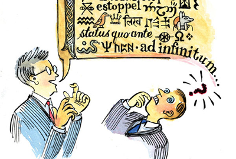

THE TENDER FOR LAW – LEGALESE FOR IDIOTS (c) 2013 ROGUESUPPORT INC. under a Creative Commons Attribution-NonCommercial-NoDerivs 3.0 Unported License.
It’s feast or famine around here at THE TENDER FOR LAW. This is article number two in as many days!
Derek Moran says that he finds it difficult to believe that I will be able to top the SURETY article…CHALLENGE ACCEPTED.
It is almost midnight on Sunday, I’m on the bridge of the Tycho-Brahe, and as I look out onto the lake the water is like a sheet of glass…and it’s not even frozen. How can I not produce a superior article tonight? So today, with all my “God” complex, “arrogance”, and the knowledge that a host of “pseudo radio” is reading my superior work, and knowing that all he can do is tremble in impotent fury. Things are so good I can cover the bad aspects of law, namely its language.
Some of you may have already started to figure this out, but every single word in a legal document is designed specifically for the purpose of trapping you. Even words like AND, OR, IS, MAY, SHOULD…all of these are traps! And law dictionaries use them perfectly. You may have noticed words like UNDERSTAND don’t mean what you think they mean. This is the lowest of the low-hanging fruit in the legal world. What I am about to teach you here is the legalese equivalent of “code breaking”.
Let’s jump back to the 1500’s…
This is the time in our civilization that we often refer to as the Renaissance. The reason the Renaissance occurred is that whole shitloads of people were dying of various forms of plague, and rat-shit-covered scientists were baffled as to why this virulent disease was spreading everywhere.
The practical result of all this was that a whole shitload of people died, and the ones that made it, inherited all their possessions. Efforts to communicate more efficiently became a social priority, because there was lots to do to maintain all this new property, and not enough people to do it. For nearly 800 years “God” was everything, despite his demonstrable lack of assistance in this era. You see the age where “God” was everything was called the “dark ages”. Every time I hear an adult with an “imaginary friend” talk about how “ignorant and closed-minded” I am, all I see is an individual that wishes to return to that horrible time.
As there were fewer people in the 1500’s, and the Renaissance was just getting underway, inherited art was often used as currency. The next generation had a higher literacy rate than the previous, and so administrative rules were born. It doesn’t take a “Rocket Scientist” to see how useful slipping Shakespeare in around the latter half of the 1500’s would be to those few who don’t actually do any work. The false profession of “law” was born.
You’ll notice that nobody ever “does” law. They only “practice” it. They keep practising and practising, but they never quite get it right (that’s what you get for not subscribing to the TENDER FOR LAW!).
From the 1500’s to the present, there has been an odd phenomenon regarding language. English is a Germanic language that merged with the language of the Angols (we will discuss the Angols and the Picts in another article). Germanic influence on the language of the Angols resulted in the Latin-to-English written in the MAGNA CARTA. But if you try to learn German today, you’ll notice an interesting phenomenon. Though the words you use sound startlingly similar, and the really observant can actually pick out the words when German speak and get a general idea of what they’re saying, even if they don’t speak the language. Except further study shows that the Germans speak “backwards” grammatically. Jumping to the south-west, Spanish, a much simpler language, where every vowel is a syllable, and words say what they mean, but once again, “grammatically backwards”. Head north-east in our mental European map…to France…well France is filled with French people so we needn’t bother with them. Those French have a different word for everything, and their language is, you guessed it, “grammatically backwards”.
Those of you noticing the pattern here will not be using too much intellect when they start posing the question, “Maybe we’re the ones that are backwards”. And that is almost, but not quite true.
Like a virus, legalese infected the English language. It’s encouraged to this day to use legalese to appear “smart”. This is done on purpose. It is an insidious piece of social engineering.
They want you to try to use these words without knowing what the little words mean.
IT’S ALL ABOUT THE LITTLE THINGS.
When you read, you read from left to right on a page. The small words actually exclude part of the sentence. You will notice in my now famous, NOTICE OF MISTAKE, that I always use “and/or”. I do this on purpose, because I like to keep my options open.
Maxims of Law say it plainly. The inclusion of one thing excludes all others. The definition of a PERSON in the CRIMINAL CODE OF CANADA is the most hysterical example of this. The definition of PERSON is hidden in the larger scope of “every one”. The common law maxim, “The INCLUSION of one is the exclusion of another” means in the context of the CRIMINAL CODE INCLUDES “Her Majesty” AND an “organization”. See for yourself:
*** THE CRIMINAL CODE OF CANADA***
“every one”, “person” and “owner”
« quiconque », « individu », « personne » et « propriétaire »
“every one”, “person” and “owner”, and similar expressions, include Her Majesty and an organization;
**********************************
You will find this by searching for R.S.C., 1985, c. C-46 under the Interpretations Section.
In reality, what this says is that a “PERSON” is “HER MAJESTY”. Unless you are “HER MAJESTY” people answering to these acts and statutes are simply “performing these acts” (remember Shakespeare) on “HER MAJESTY’s” behalf, much like the GOVERNOR GENERAL PERFORMS royal duties on the Queen’s behalf. This is why the GOVERNOR GENERAL is always a chosen CITIZEN, and not an elected official.
The GOVERNOR GENERAL ACTS as the Queen when the Queen is not in town. This of course has nothing to do with “HER MAJESTY”.
When dealing with the LAW, in CANADA anyway, you are always dealing with “HER MAJESTY THE QUEEN IN RIGHT OF CANADA”, which as we all know is a CORPORATE ORGANIZATION.
“OR” means you have a choice, “one” OR the “other”, but not BOTH.
So, in the CRIMINAL CODE OF CANADA, a PERSON can be “HER MAJESTY”. A PERSON can be “HER MAJESTY”, but a PERSON must also be an “ORGANIZATION”. Notice it does not say “OR” an organization in the above interpretation. Confused yet?
That happens in Legalese. Let’s, instead of looking at this dry, depressing CRIMINAL CODE stuff, look at something happy, exciting and real.
I can say with absolute certainty that no woman on the planet has loved me more than Tara. However, no amount of love would compel her to JOINDER herself to a “BILL OF LADING”, and hand it over to the GOVERNMENT. That means “getting married” (for the stupid amongst you). I’m sorry if that sounds condescending (that means talking down to people).
Now think about this marriage transaction. The marriage INCLUDES “Scott” AND “Tara”, not “Scott” OR “Tara”. This means marriage makes you effectively ONE PERSON UNDER THE LAW. Since the marriage actually consists of THREE ENTITIES, “Scott” AND “Tara”, which by its nature EXCLUDES the GOVERNMENT, still remains an “ORGANIZATION”. A marriage ORGANIZES these “entities” into their respective roles. If “Scott” AND “Tara” remain “Scott AND Tara”, the GOVERNMENT HAS NO STANDING. However, if Tara sought a divorce, the MARRIED PERSON is no longer “Scott AND Tara”, and the GOVERNMENT gets to intervene.
This most certainly wouldn’t be the case if it was “Scott” OR “Tara”. Therefore, the above CRIMINAL CODE definition of “PERSON” defines HER MAJESTY THE QUEEN IN RIGHT OF ***INSERT PROVINCE HERE***, which is both “HER MAJESTY” AND an “ORGANIZATION”.
Every one who is CHARGED in CANADA is usually CHARGED by their PROVINCE. For instance, if I were to take the ONE PEOPLE’S PUBLIC FRAUD lawyer “Heather” and bash her skull into jelly with a ball-peen hammer (as she so richly deserves), I would likely be CHARGED with HOMICIDE in the JURISDICTION where I chose to do this “skull-bashing”. As I’m a profoundly lazy man I probably wouldn’t travel, so ONTARIO would be the JURISDICTION. This makes “HER MAJESTY” AND the “ORGANIZATION”, “HER MAJESTY THE QUEEN IN RIGHT OF ONTARIO”. Since all ACTS and STATUTES fall to PUBLIC SERVANTS who are ACTING on behalf of “HER MAJESTY”, this makes all PUBLIC SERVANTS who are ACTING on behalf of “HER MAJESTY” effectively “HER MAJESTY”. HER MAJESTY THE QUEEN IN RIGHT OF ONTARIO is in fact, an “ORGANIZATION”. You now have the qualifications for a “PERSON” as defined in the CRIMINAL CODE OF CANADA.
Just as the “marriage” consists of “Scott AND Tara”, which effectively creates an “ORGANIZATION”, “HER MAJESTY” and the organization defined as “IN RIGHT OF ONTARIO” create a “PERSON” which YOU are presumed to be a PUBLIC SERVANT of. This effectively means all CRIMINAL PROCEEDINGS are simply administrative processes for that “ORGANIZATION”. The NOTICE OF MISTAKE effectively removes that presumption.
You now see how powerful the words “and” and “or” are. If AQUILAE says the CAPTAIN of the TYCHO-BRAHE is “Scott AND Tara”, this would mean neither of us individually could act as CAPTAIN, but “Scott and Tara” could BOTH be CAPTAIN. This means that all ORDERS from the CAPTAIN must come from BOTH Scott AND Tara. However, the AQUILAE TRUST is not a stupid document, and the CAPTAIN of the TYCHO-BRAHE is, in fact, Scott OR Tara. This means that when Tara speaks, everyone shuts the fuck up…including me. It’s Scott OR Tara – not BOTH!
“AND” refers to BOTH. “OR” does not. This is why putting “and/or” gives you the options; and since the AQUILAE TRUST is pretty much perfect, here in reality, the CAPTAIN of the TYCHO-BRAHE is, in fact, Scott and/or Tara.
This means I can ACT as CAPTAIN, Tara can ACT as CAPTAIN, and we can BOTH ACT as CAPTAIN. Recipients of this POLICY have NO STANDING to contest when we assume and/or drop the role of CAPTAIN. Why do we do this, you ask? Because FUCK OFF, THAT’S WHY! If you’re even looking at the AQUILAE TRUST, you’re a fucking TRUSTEE; and the only reason you should be looking at the AQUILAE TRUST is to find the best way to “Shut the fuck up and do what you’re told” for Scott and/or Tara….
And that is how you make a powerful LEGAL document with the words “and/or”, and the reason why we write things this way. Use AND & OR to restrict other parties. Use BOTH (and/or) to free yourself.
If your document is stating the terms, make it as open as possible for YOU, and as restrictive as possible for every OTHER PARTY. If somebody is thought of as a “good lawyer”, it means they have mastered this skill. Were I to be practising law, I would be a very, very good lawyer.
One of our loyal readers made the horrendous mistake of using different words, in another post. Instead of NOTICE OF MISTAKE he said, NOTICE OF “ERROR”, which means something completely different. If you look up the legal definition of “mistake” you will notice amongst other things (inter alia) the legal definition of “MISTAKE” ends with “, or error”. If you are going to learn from the TENDER FOR LAW, you must always remember the Number 1 Rule of the Universe:
SCOTT IS ALWAYS RIGHT!
You can save yourself a lot of time by NOT second-guessing Scott, and proceeding to figure out WHY Scott is right.
This also means that when I present a document you should presume it’s perfect, and that changing it will fuck you over in ways you don’t even understand. “NOTICE OF ERROR” is not “NOTICE OF MISTAKE”. You don’t change the document because you think it “sounds cooler”. You don’t change the document because you think another cooler-sounding word means the same thing; and I will always interpret such changes as TENDERING AN OFFER to amuse me, by allowing me to berate you for your stupidity, and to laugh at you when a court kicks your ass. This is a TENDER I will gladly ACCEPT and volunteer for, with the added bonus that I will execute my duties in this TENDER to the best of my abilities. I’m really good at that too.
Taking what you have just learned here and reading through ONE PEOPLE’S PUBLIC FRAUD, will reveal some very interesting and insidious things. You’re better off serving me as a slave, because unlike ONE PEOPLE’S PUBLIC FRAUD, I won’t lie to you, and I’ll tell you exactly what I mean.
So there you have it, AND & OR – two hidden keys to legalese and the knowledge that “include also excludes”…and before you ask EXCLUDES includes all that remains. Use EXCLUDE to get rid of everything else; use INCLUDE to restrict to a single point/item.
The guy with the fake “charity” seeking legal advice actually asked what TENDER means, and it occurs to me that those who AREN’T lying to me might wonder too. TENDER in the context of Law means, “to present to PERSON, an unconditional offer, to enter into a contract”. Look at those words, then look at a bank note. THIS NOTE IS LEGAL TENDER means, “THIS NOTE IS AN UNCONDITIONAL OFFER TO ENTER INTO A CONTRACT FOR LAW”. That is why the group name is so clever. This group is ABOUT that UNCONDITIONAL OFFER TO ENTER INTO A CONTRACT FOR LAW. It’s ALL money.
Money is JOINDER. JOINDER MAY (Read as: “ALWAYS DOES”) INCLUDE SURETY!
THIS is the LEGALESE you need to know. NO MORE. Your ONLY goal should be to REMOVE and/or AVOID SURETY when dealing in commerce and/or LAW. WHEN YOU SIGN A CHEQUE, you are TENDERING SURETY. A BANK NOTE does NOT TENDER SURETY as the SURETY is signed for, by SOMEBODY ELSE.
If you have OTHER LEGALESE questions, post them in the comments. OFF TOPIC COMMENTS WILL BE DELETED. LEGALESE IS A COMPLEX SUBJECT, SO BE PREPARED FOR VANISHING POSTS, and/or BANNING if you do post something OFF TOPIC.
